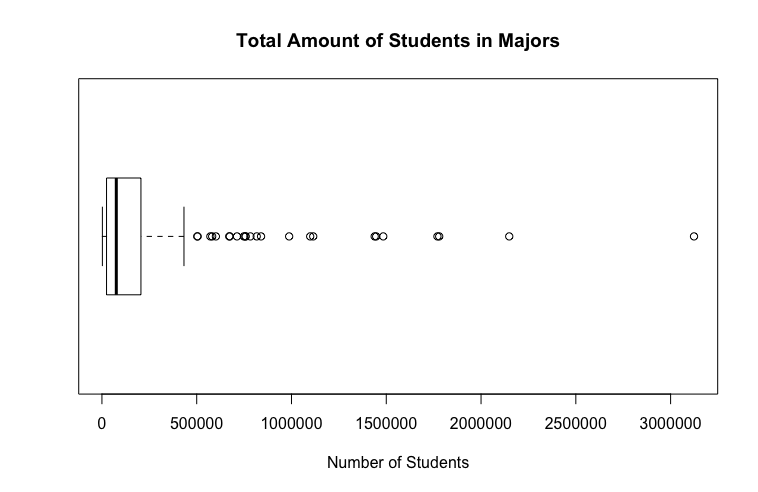
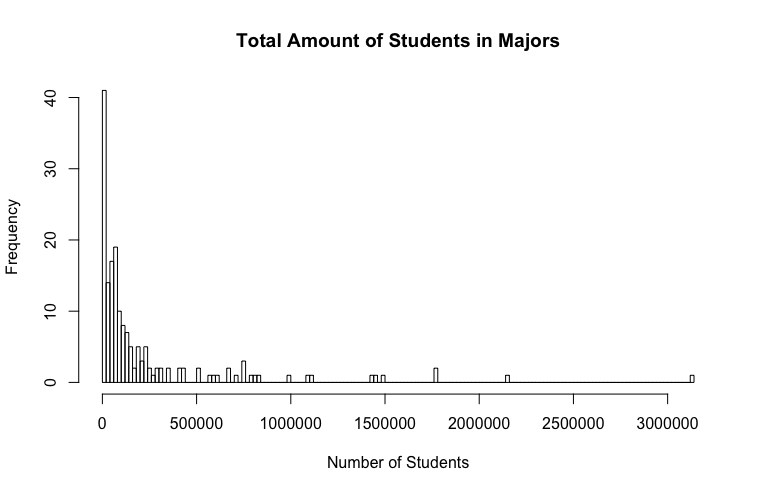
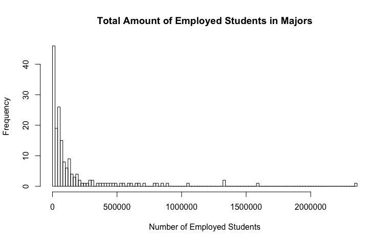
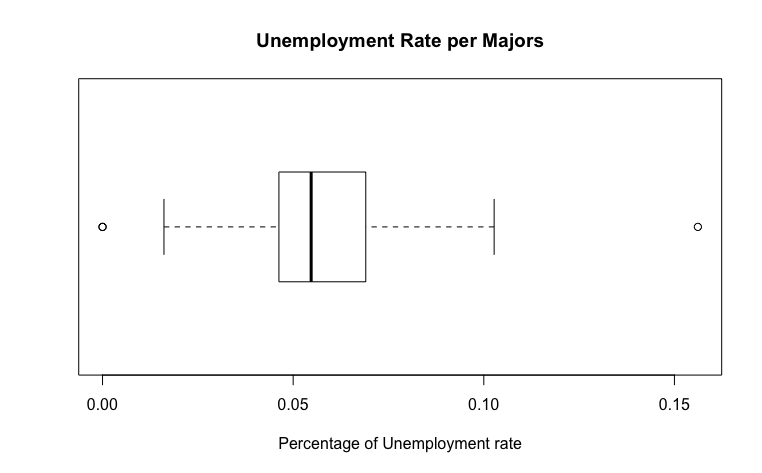
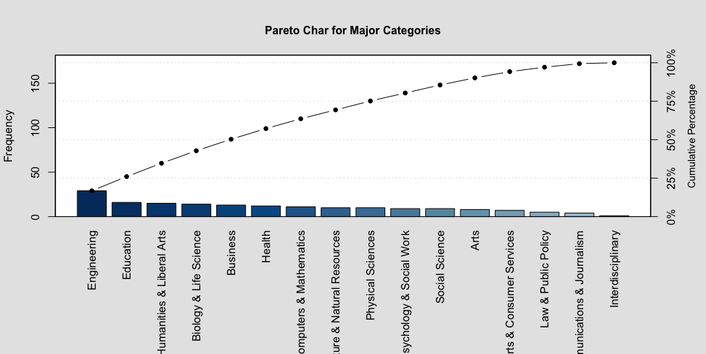

A DataSet About College Majors
What kind of Data am i researching about and why?
My name is Max Juarez and i'm currently enrolled in Lehman College. I'm currently pursuing a degree in Computer Science while also trying to minor in mathematics. Since the day i had first enrolled in my very first class, i am proud to say that i have debated on pursuing in a different degree rather than trying to major in Computer Science thus the DataSet about College Majors piqued my interest.
Why did it piqued my interest?
I've always thought that technology will soon evolve to something greater that might eventually shape the whole world into something magnificent so i wanted to see whether or not Computer Science had a lot of enrolls. I was also interested in other majors that i wanted to try out other than Computer Science.
This dataset contains a few headers with a description as to what they are meant to show (purposes)
The headers are as follow:
- Major_code - Major Code, FO1DP in ACS PUMS
- Major - Major description
- Major_category - Category of major from Carnevale et al
- Total- Total number of people with major
- Employed - Number of employed (ESR == 1 or 2)
- Employed_full_time_year_round - Employed at least 50 weeks (WKW ==1 ) and at least 35 hours (WKHP >= 35)
- Unemployed - Number of unemployed (ESR ==3 )
- Unemployment_rate - Unemployed / (Unemployed + Employed)
- Median - Median earnings of full-time, year-round workers
- P25th - 25th percentile of earnigns
- P75th - 75th percentile of earnings
Unanswered questions i came up with?
What are the top 10 Majors with the most people enrolled in percentage and why do you (i) think these majors are the most popular? The major with the most Employed? The Major with the most unemployed? Which of the majors have the least unemployment rate?
What is "Total"?
The total is defined as the amount of people that are majoring in a specific major, such as Computer Science, Nursing, Pharmacology, Geological and Geophysical Engineering, and so on. The total amount of students majoring in a specific kind of major is extremely valuable to determine the most popular type of degree and the least popular type of degree. The mean, standard deviation, skewness and kurtosis are:
Mean: 230256.6
Standard Deviation: 422068.5
Skewness: 3.591402
Kurtosis: 15.98407
BoxPlot and Histogram of the data "Total"
The boxplot used to plot the column Total of all-ages.csv is essential to understand the amount of students who ended up with pursing a major. It appears as if the boxplot was the one and only graph that truly captured the data's purpose. One can easily find the outliers, datum detached from the rest of the data that looked inconsistent and it appears that the graph captured 24 outliers, data that exceeded an amount that other data did not. These 24 outliers were the top 24 majors that were popular among other majors.
The data's histogram has a skewness of 3.591402 and a kurtosis of 15.98. The kurtosis's value appears to categorize the data as a platykurtic and a positive skewness which let me to believe that the data is slightly skewed to the right. Although, it appears that the graph has a random distribution. My assumption is that the histogram didn't help as much as i thought it would've had.
Computing a confidence interval for the "Total" # 1:
Knowing that the mean of the data "Total" is mean = 230256.6, the standard deviation = 422068.5, and the dataset has a length of n = 173. We can compute the margin of error by adding/subtracting the mean from the confidence level times the standard deviation over the square root of n (230256.6 ± 1.959964 * 422068.5/sqrt(173)) which gives us the range where the true mean lands on: [167362.8, 293150.4].
What is "Employed"?
The Employed column of my dataframe is defined as the amount of people that are employed by the major they had majored. The mean, standard deviation, skewness and kurtosis are:
Mean: 166162
Standard Deviation: 307324.4
Skewness: 3.769423
Kurtosis: 18.03576
BoxPlot and Histogram of the data "Employed"

The boxplot is similar to the Total boxplot and it helps the viewer see the pieces of data that are detached from the box's 4th quarter. The 24 outliers are the same outliers that the column Total displayed on it's own boxplot graph thus implying that the most popular major with the most total number of majors are most likely be able to seek a job than those majors that aren't as popular as they seem to be on the boxplot. These outliers had values greater than 350,000.
Similar to the Total boxplot, a positive skewness and postive kurtosis made me believe that the graph was slightly skewed towards the right and had a platykurtic curve. Yet, the histogram displayed a random distribution. The only differences i saw on the Total's histogram and Employed's histogram are the indexes. The indexes displays the number of employed/total students.
Computing a confidence interval for the "Employed" # 2:
Knowing that the mean of the data "Employed" has mean = 166162, standard deviation = 307324.4, and the dataset has a length of n = 173. We can compute the margin of error by adding/subtracting the mean from the confidence level times the standard deviation over the square root of n (230256.6 ± 1.959964 * 307324.4/sqrt(173)) which gives us the range where the true mean lands on: [120366.6, 211957.4].
What is "Unemployement_rate"?
The Unemployed_rate column of my dataframe is defined as the rate in which unemployment happens on each majors listed on the all-ages.csv dataframe. The equation for unemployment rate is given by (Unemployed / (Unemployed + Employed)). The mean, standard deviation, skewness and kurtosis are:
Mean: 0.05735545
Standard Deviation: 0.0191771
Skewness: 0.6928492
Kurtosis: 3.644075
BoxPlot and Histogram of the data "Unemployement_rate"
The boxplot of Unemployement_rate is unique in that it was different than the boxplot of both Total and Employed. This is significantly great because it shows 4 outliers that are dissimilar than the outliers of Total and Employed and when something is dissimilar, unexpected things can be found. The boxplot shows the percentage(s) of the Unemployement_rate, a small number than the amount of students since the amount of students exceeded more than 350,000, the Unemployment_rate did not. The data has a standard deviation of 0.019, a number that is quite closer to 0. The standard deviation shows how not spread out the data are from one another as seen on the boxplot.

The histogram is also another plot that is different than both Total and Employed for the same reason as the numbers of Unemployement_rate being small digits. The data's mean is 0.057 as shawn in the histogram with a standard deviation of 0.019. The skewness however is 0.69 slightly closer to 0. A skewness of 0 has a normal distribution but because the Unemployement_rate's skewness is not equal to 0, it can be assume that the distribution is slight skewed towards the right. Similar to the kurtosis of both Total and Employed, the data has a platykurtic curve which sadly enough contradicts what the histogram shows.
Computing the confidence interval for the "Unemployement_rate" # 3:
Knowing that the mean of the data "Unemployement_rate" has mean = 0.05735545, standard deviation = 0.0191771, and the dataset has a length of n = 173. We can compute the margin of error by adding/subtracting the mean from the confidence level times the standard deviation over the square root of n (0.05735545 ± 1.959964 * 0.0191771/sqrt(173)) which gives us the range where the true mean lands on: [0.05449781, 0.0602131].
What is a "Pareto chart"?
The Pareto principle which is commonly reffered to as the 80/20 rule or The Law of The Vital Few was first noted by an Italian Economist Vilfredo Pareto who showed that approximately 80% of the land in Italy was owned by 20% of the population and to his surprise, when surveying other countries, had a similar distribution applied. Thus, the Pareto Principle has been applied to many problems. I will apply the Pareto chart in order to grasp an understanding of what the categorical variable in my AllAges dataset consist of.
The Pareto chart for my Quantative data: Major
The pareto chat is quite different than other graphs. The differences can be spot on if one where to look at the two contrasting y-variables, the frequency on the left-side of the graph and the commulative percentage on the right-side of the graph. The commulative percentage expresses the frequency distribution within each interval. The frequency on the left side of the graph summarizes the highest amount of majors in that particularly major category. My pareto chart shows 14 different kind of major categories. In each major categories, there are different kind of studies that that particularly major offers. For example, a Computer And Mathematics major has 11 different kind of studies one might be able to major such as Computer Science, Applied Mathematics, Mathematics, etc...
Citation: I want to give a huge thanks to FiveThirdyEight on Github for the huge amount of DataSets that was posted to the public. Without this, i wouldn't had been able to come across the all-ages.csv Also, the all-ages.csv was based on an article called The Economic Guide To Picking A College Major which also has a bunch of information regarding college majors and goes in depth on the good and bad sides of some majors.